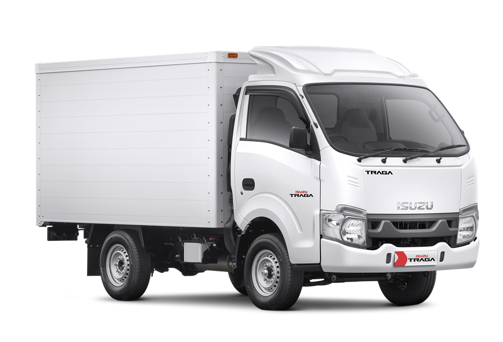
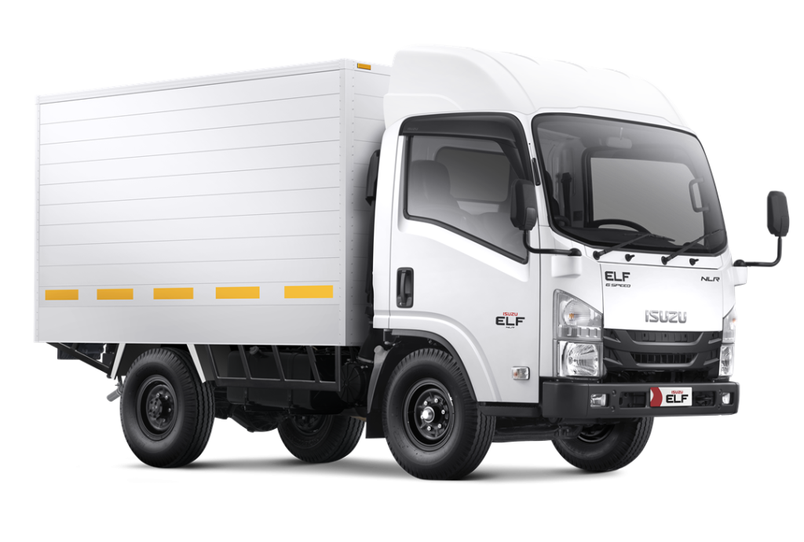
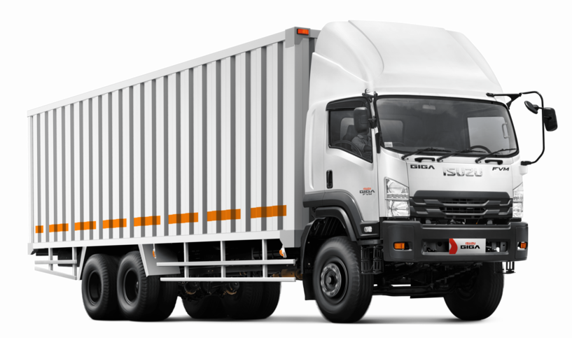

Melayani pembelian Isuzu Traga, ELF, GIGA, D-Max, MU-X serta konsultasi kebutuhan armada bisnis Anda.
Konsultasi Gratis
Pick up luas dan irit BBM, cocok untuk niaga ringan
Harga: Rp 289.000.000 (OTR Jakarta)

Truk ringan efisien untuk distribusi kota dan antar pulau
Harga: Rp 422.000.000 (OTR Jakarta)

Truk besar andalan industri dan proyek berat
Harga: Rp 940.000.000 (OTR Jakarta)
Teknologi common rail yang hemat bahan bakar dan bertenaga
Jaringan servis luas dan sparepart tersedia di seluruh Indonesia
Digunakan oleh berbagai sektor bisnis dari kecil hingga besar
Kami membantu memilih tipe truk Isuzu sesuai kebutuhan usaha sehingga investasi kendaraan menjadi lebih tepat.
“Traga-nya kuat banget buat angkut bahan bangunan. Servis juga gampang di cabang Isuzu.”
– Pak Rudi, Usaha Material
“Saya beli Elf NLR buat travel. Irit dan nyaman, penumpang juga suka.”
– Bu Lilis, Usaha Travel
Kenali kebutuhan usaha Anda sebelum memilih jenis truk yang tepat...
Baca selengkapnya →Teknologi common rail punya banyak keunggulan dalam efisiensi dan tenaga...
Baca selengkapnya →Keduanya laris di pasaran, tapi beda fungsi dan segmen. Mana yang cocok buat Anda?
Baca selengkapnya →Ya, tersedia opsi pembiayaan melalui rekanan leasing resmi sesuai ketentuan yang berlaku.
Harga yang tercantum adalah harga OTR Jakarta dan sudah termasuk biaya administrasi kendaraan.
Bisa, kami dapat bantu pengiriman unit ke berbagai wilayah sesuai permintaan konsumen.
Ayat
Telp / WA: 0823-2292-8919
Email: hidayatullah@iso.astra.co.id
Alamat Dealer: Jl. Danau Sunter Utara Blok O3 Kav 30, Sunter II, Jakarta Utara